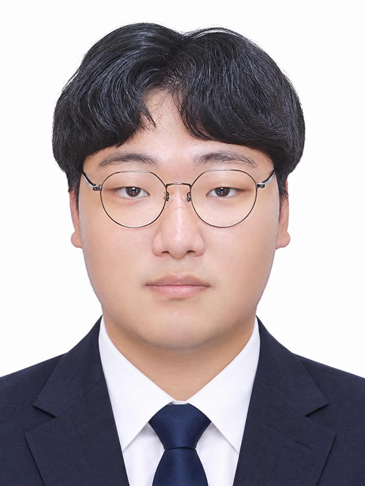
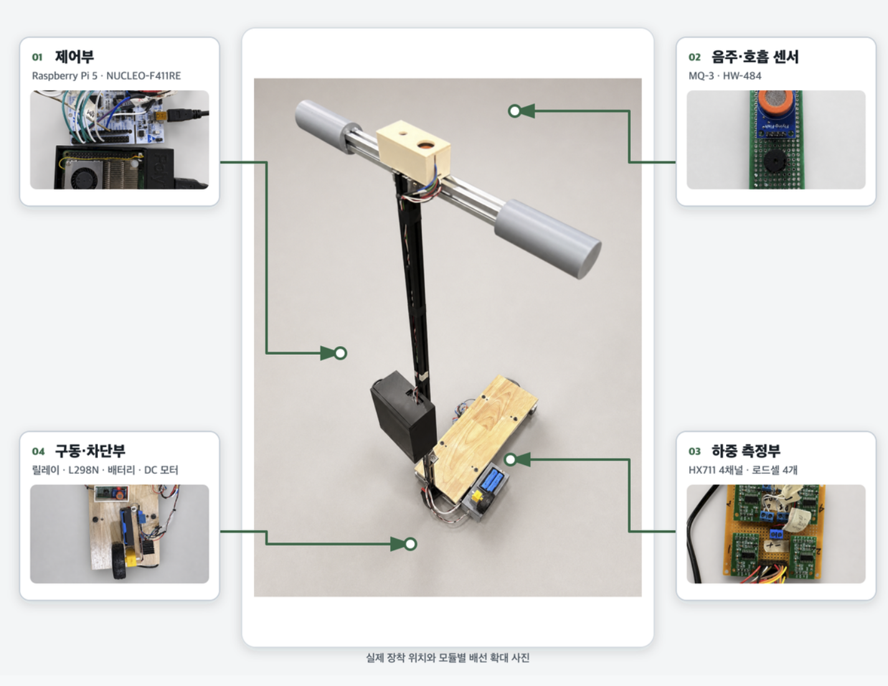

FIRMWARE · HARDWARE · ROBOTICS
박종빈
회로와 코드를 함께 이해하고,
센서·모터 제어와 장치 통신을 구현합니다.
C · STM32 · FreeRTOS · UART · PWM
센서 배선 · 모터 제어 · 하드웨어 통합
기술 스택
- 펌웨어
- C · C++ · STM32 · ESP32 · FreeRTOS
- 하드웨어·통신
- 회로 설계·배선 · 센서·모터 제어 · UART · PWM · GPIO
- 시스템
- Python · Linux · Raspberry Pi · ROS 2
수상 내역 스마트 도서관 로봇
- 한이음 ICT멘토링 공모전 동상
- 캡스톤디자인 지역연계형 우수상
- 한국공학대전 총장상
프로젝트 06
각 프로젝트에서 맡은 구현과 문제 해결 과정을 확인하세요.

01 / MAIN PROJECT · 진행 중
스마트플랜트
팀장 · PM · 기술 지원 · 웹사이트 제작
팀원 피드백으로 문제 해결 방향을 제안하고, 웹사이트 제작과 하드웨어 제작 지원을 맡고 있습니다.
상세 보기 →
02 / PROJECT
스마트 도서관 로봇
ESP32 · RFID · 하드웨어 · Android
RFID 인식 범위·수신 속도를 조정하고 ESP32 서버 연동과 기판 제작을 맡았습니다.
상세 보기 →
03 / PROJECT
ARMIGO
팀장 · 하드웨어 설계 · 다중 모터 제어
STM32 기반 회로·통신 배선을 설계하고, 4축 다중 모터 제어와 Half-Duplex 통신 문제 해결을 맡았습니다.
상세 보기 →
04 / PROJECT
세이프킥
STM32 · 센서 보정 · 구동 제어
4채널 하중 보정과 센서 이상 시 잠금, 모터 PWM 제어를 구현했습니다.
상세 보기 →
05 / PROJECT
음주컷
하드웨어 설계 · 펌웨어
착석·측정·응답 대기와 이탈·재측정을 상태 머신으로 처리했습니다.
상세 보기 →
06 / MINI PROJECT
PLC 자동 적재
PLC 팀 미니 프로젝트
소재별 적재·출고를 구현한 팀 프로젝트로, 메모리 맵을 공유해 코드 병합을 진행했습니다.
상세 보기 →